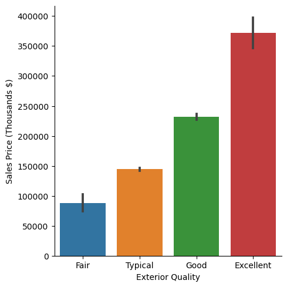
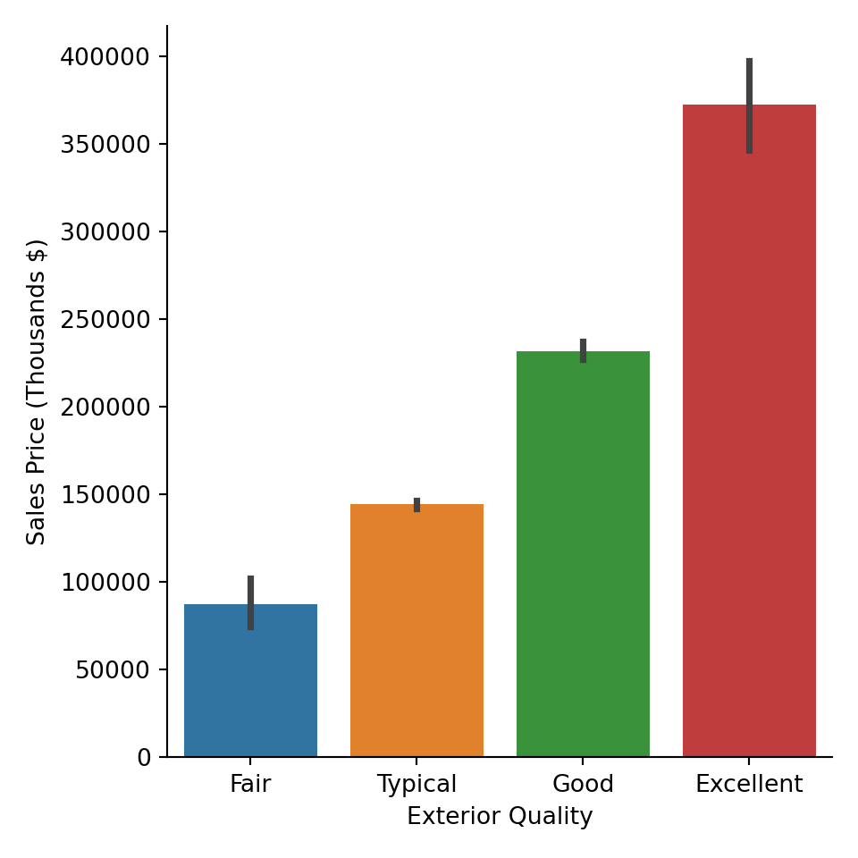
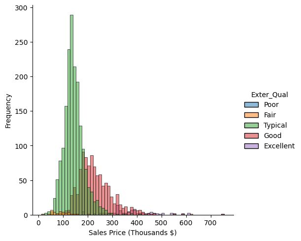
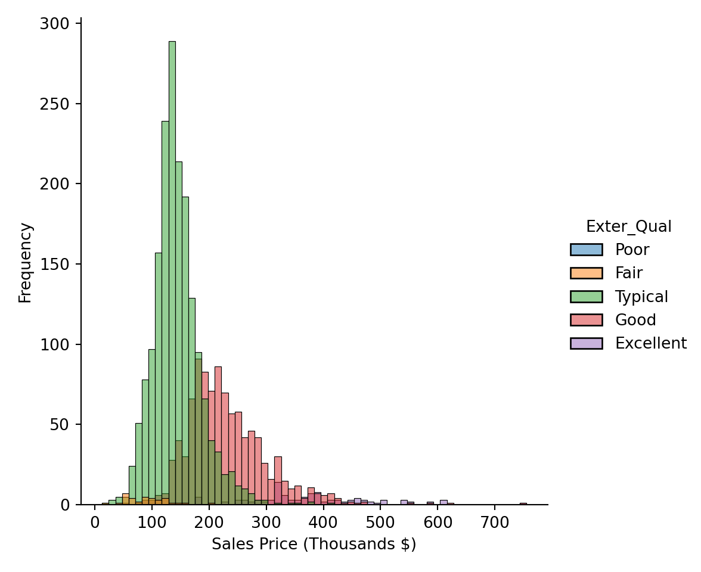
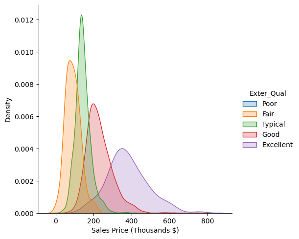
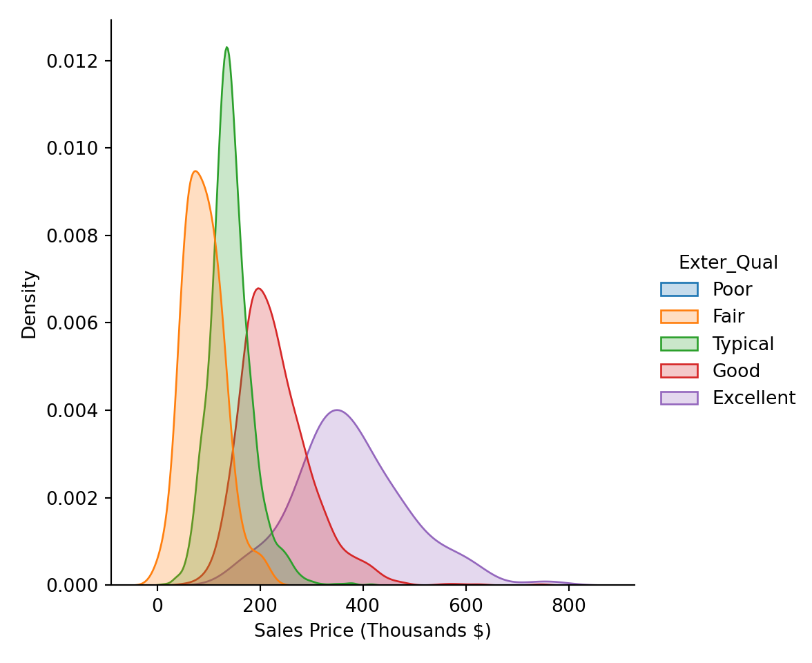

Code
library(AmesHousing)
library(reticulate)
use_condaenv("msa")
ames <- make_ordinal_ames()Yang Chen
September 4, 2023
What is each package used for?
pandas library is an open-source data manipulation and analysis library for the Python programming language. It provides data structures and functions that make it easier to work with structured data, such as tabular data (similar to spreadsheets and SQL tables). Pandas is widely used in data analysis, data cleaning, data transformation, and data visualization tasks.
numpy (Numerical Python) is an open-source Python library that provides support for large, multi-dimensional arrays and matrices, as well as a variety of mathematical functions to operate on these arrays. It is a fundamental library for numerical and scientific computing in Python and is widely used in various fields such as data analysis, machine learning, physics, engineering, and more.
numpy is useful for its “vectorized” operations which help create performant code for operations.
seaborn is an open-source Python data visualization library based on Matplotlib. It provides a higher-level interface for creating informative and attractive statistical graphics. Seaborn is particularly well-suited for creating complex visualizations that showcase relationships and patterns in data, making it a popular choice among data analysts, scientists, and data visualization enthusiasts.
matplotlib is a widely-used open-source data visualization library for the Python programming language. It provides a comprehensive set of tools for creating a variety of static, animated, and interactive visualizations in Python. Matplotlib is particularly popular among scientists, engineers, data analysts, and researchers for creating publication-quality visualizations.
matplotlib can be used in combination with seaborn to help adjust low-level graphical details.
statsmodels is an open-source Python library that focuses on statistical modeling and hypothesis testing. It provides a wide range of tools and classes for estimating and interpreting various statistical models. Statsmodels is particularly useful for statisticians, economists, social scientists, and researchers who need to perform rigorous statistical analysis and hypothesis testing on their data.
In particular, the summaries provided by statsmodels provides an R-like interface of useful tests and statistics that we would see executing similar code in R.
If you’re running the reticulate library in R you can run Python code in R. This also includes converting R objects into Python objects. For example, we can move R datasets to pandas dataframes:
from sklearn.model_selection import train_test_split
# Create a train-test split where test is 30% of the data
# Setting the seed (random_state) ensures that we can reproduce our split
# Function returns a tuple so we can unpack it into separate variables
train, test = train_test_split(ames, test_size=0.3, random_state=123)
train.head() MS_SubClass ... Latitude
2278 One_Story_1946_and_Newer_All_Styles ... 41.992318
1379 One_Story_1946_and_Newer_All_Styles ... 42.031571
2182 PUD_Multilevel_Split_Level_Foyer ... 42.018973
1436 Two_Story_1946_and_Newer ... 42.017423
1599 Two_Story_PUD_1946_and_Newer ... 41.992133
[5 rows x 81 columns]/opt/homebrew/Caskroom/miniconda/base/envs/msa/lib/python3.11/site-packages/seaborn/axisgrid.py:118: UserWarning: The figure layout has changed to tight
self._figure.tight_layout(*args, **kwargs)

/opt/homebrew/Caskroom/miniconda/base/envs/msa/lib/python3.11/site-packages/seaborn/axisgrid.py:118: UserWarning: The figure layout has changed to tight
self._figure.tight_layout(*args, **kwargs)

/opt/homebrew/Caskroom/miniconda/base/envs/msa/lib/python3.11/site-packages/seaborn/axisgrid.py:118: UserWarning: The figure layout has changed to tight
self._figure.tight_layout(*args, **kwargs)

| Dep. Variable: | Sale_Price | R-squared: | 0.493 |
| Model: | OLS | Adj. R-squared: | 0.492 |
| Method: | Least Squares | F-statistic: | 663.9 |
| Date: | Mon, 04 Sep 2023 | Prob (F-statistic): | 2.14e-301 |
| Time: | 22:20:13 | Log-Likelihood: | -25391. |
| No. Observations: | 2051 | AIC: | 5.079e+04 |
| Df Residuals: | 2047 | BIC: | 5.081e+04 |
| Df Model: | 3 | ||
| Covariance Type: | nonrobust |
| coef | std err | t | P>|t| | [0.025 | 0.975] | |
| Intercept | 8.741e+04 | 1.11e+04 | 7.882 | 0.000 | 6.57e+04 | 1.09e+05 |
| C(Exter_Qual)[T.Typical] | 5.687e+04 | 1.12e+04 | 5.074 | 0.000 | 3.49e+04 | 7.89e+04 |
| C(Exter_Qual)[T.Good] | 1.444e+05 | 1.13e+04 | 12.780 | 0.000 | 1.22e+05 | 1.67e+05 |
| C(Exter_Qual)[T.Excellent] | 2.849e+05 | 1.28e+04 | 22.180 | 0.000 | 2.6e+05 | 3.1e+05 |
| Omnibus: | 692.330 | Durbin-Watson: | 2.009 |
| Prob(Omnibus): | 0.000 | Jarque-Bera (JB): | 4656.041 |
| Skew: | 1.420 | Prob(JB): | 0.00 |
| Kurtosis: | 9.813 | Cond. No. | 21.7 |
sum_sq df F PR(>F)
C(Exter_Qual) 6.614593e+12 3.0 663.942552 2.143702e-301
Residual 6.797813e+12 2047.0 NaN NaNanova_oneway<class 'statsmodels.stats.base.HolderTuple'>
statistic = 663.9425520223926
pvalue = 2.1437019005998585e-301
df = (3.0, 2047.0)
df_num = 3.0
df_denom = 2047.0
nobs_t = 2051.0
n_groups = 4
means = array([372342.7721519 , 87410.40740741, 231856.75285714, 144284.92690763])
nobs = array([ 79., 27., 700., 1245.])
vars_ = array([1.19696698e+10, 1.52817220e+09, 4.96364326e+09, 1.89297368e+09])
use_var = 'equal'
welch_correction = False
tuple = (663.9425520223926, 2.1437019005998585e-301)scipyF_onewayResult(statistic=663.9425520223925, pvalue=2.1437019005998585e-301) Sale_Price pred_anova resid_anova
2278 130000 144284.926908 -14284.926908
1379 109900 144284.926908 -34384.926908
2182 140000 144284.926908 -4284.926908
1436 207500 231856.752857 -24356.752857
1599 98000 144284.926908 -46284.926908
452 196000 231856.752857 -35856.752857
585 256900 144284.926908 112615.073092
1078 154000 231856.752857 -77856.752857
2452 290000 231856.752857 58143.247143
1658 175000 231856.752857 -56856.752857LeveneResult(statistic=65.87759543050396, pvalue=1.1590149512173662e-40)FlignerResult(statistic=181.57626347457713, pvalue=4.027701838364485e-39)KruskalResult(statistic=980.2665302456622, pvalue=3.434646694236542e-212)| group1 | group2 | meandiff | p-adj | lower | upper | reject |
| Excellent | Fair | -284932.3647 | 0.0 | -317962.4284 | -251902.3011 | True |
| Excellent | Good | -140486.0193 | 0.0 | -158071.6548 | -122900.3837 | True |
| Excellent | Typical | -228057.8452 | 0.0 | -245248.7081 | -210866.9824 | True |
| Fair | Good | 144446.3454 | 0.0 | 115386.8407 | 173505.8502 | True |
| Fair | Typical | 56874.5195 | 0.0 | 28052.2017 | 85696.8374 | True |
| Good | Typical | -87571.8259 | 0.0 | -94571.5032 | -80572.1487 | True |
Currently there is no Dunnett’s test implemented in Python.
array([[1. , 0.69584201],
[0.69584201, 1. ]])array([[1. , 0.42722628, 0.32717559, 0.23863599, 0.55703178],
[0.42722628, 1. , 0.80658329, 0.45383515, 0.62538744],
[0.32717559, 0.80658329, 1. , 0.57135986, 0.62067339],
[0.23863599, 0.45383515, 0.57135986, 1. , 0.69584201],
[0.55703178, 0.62538744, 0.62067339, 0.69584201, 1. ]])Correlation matrix pair plots:
| Dep. Variable: | Sale_Price | R-squared: | 0.484 |
| Model: | OLS | Adj. R-squared: | 0.484 |
| Method: | Least Squares | F-statistic: | 1923. |
| Date: | Mon, 04 Sep 2023 | Prob (F-statistic): | 6.98e-297 |
| Time: | 22:20:20 | Log-Likelihood: | -25409. |
| No. Observations: | 2051 | AIC: | 5.082e+04 |
| Df Residuals: | 2049 | BIC: | 5.083e+04 |
| Df Model: | 1 | ||
| Covariance Type: | nonrobust |
| coef | std err | t | P>|t| | [0.025 | 0.975] | |
| Intercept | 1.577e+04 | 4006.043 | 3.937 | 0.000 | 7913.812 | 2.36e+04 |
| Gr_Liv_Area | 110.5452 | 2.521 | 43.857 | 0.000 | 105.602 | 115.488 |
| Omnibus: | 342.298 | Durbin-Watson: | 2.050 |
| Prob(Omnibus): | 0.000 | Jarque-Bera (JB): | 4078.850 |
| Skew: | 0.396 | Prob(JB): | 0.00 |
| Kurtosis: | 9.863 | Cond. No. | 4.96e+03 |
Sale_Price pred_anova pred_slr
2278 130000 144284.926908 240619.031902
1379 109900 144284.926908 115702.987926
2182 140000 144284.926908 134274.576765
1436 207500 231856.752857 198390.776328
1599 98000 144284.926908 136485.480198
452 196000 231856.752857 160142.146934
585 256900 144284.926908 307609.405929
1078 154000 231856.752857 195516.601865
2452 290000 231856.752857 295007.256359
1658 175000 231856.752857 208450.386949